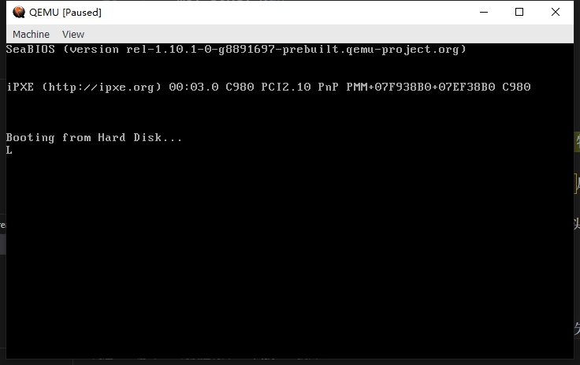
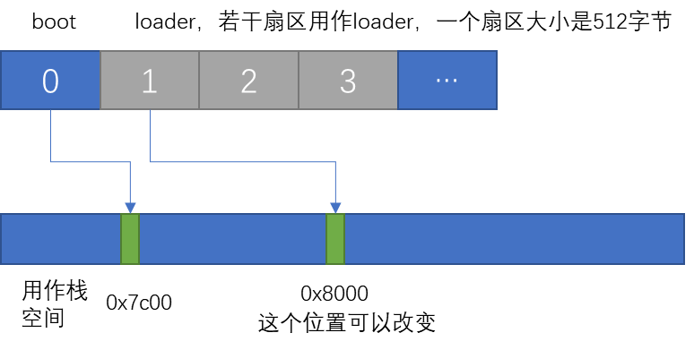
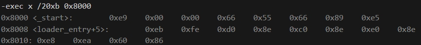

boot引导程序的实现
C++
Linux, 操作系统
字数统计: 825(字)
阅读时长: 3(分)
boot引导程序的实现
上一篇博客有提到过采用二级加载模式，因为boot的容量限制，所以boot引导程序只负责loader的加载，由loader来实现具体的初始化工作和内核的加载。
采用平坦模式，首先将所有的段寄存器指向0，直接用偏移地址进行寻址，根据x86实模式的存储映射情况，将0x7c00之前的空间用作栈空间。
1
2
3
4
5
6
7
8
9
10
| _start:
mov $0, %ax
mov %ax, %ds
mov %ax, %ss
mov %ax, %es
mov %ax, %fs
mov %ax, %gs
// 使用0x7c00之前的空间作栈，大约有30KB的RAM，足够boot 和loader使用
mov $_start, %esp
|
BIOS通过软中断，自动从中断向量表中取相应的地址进行执行，通过寄存器来传递参数，这样可以避免和硬件直接交互。这里用INT 10, AH=0xE也就是显示字符功能来测试引导程序是否正常运行，正常运行后显示的是字符 ‘L’。
int $0x10这个中断函数作用是显示字符，同时光标前移，其中AL = 想要显示的字符、BL = 前景色，BH＝页码，这里考虑字符即可。
1
2
3
4
| // 显示字符'W'来进行测试
mov $0xe, %ah
mov $'L', %al
int $0x10
|
qemu显示如下：

接下来用BIOS提供的软中断服务从磁盘中读取loader，没有考虑磁盘、磁头等。之前boot程序和栈的指针esp是被加载到了0x7c00位置处，本来0x7c00之后的位置是boot的程序，虽然boot程序占用的内存小，但是为了简单起见，还是直接将loader程序放到0x8000位置处，目前只在boot程序中写一段代码，从磁盘的第一个扇区读取指定位置的几个扇区，然后加载到内存中。

1
2
3
4
5
6
7
8
9
10
11
12
13
14
15
16
17
18
19
20
21
22
23
24
| read_loader:
mov $0x8000, %bx //ES:BX = 0x0000:0x8000 = 物理地址0x8000
mov $0x2, %ah //功能号：读扇区
mov $0x2, %cx //柱面号=0，扇区号=2（注意：扇区从1开始编号）
mov $64, %al //读取扇区数量
mov $0x0080, %dx //驱动器号=0x80（硬盘），磁头号=0
int $0x13 //调用BIOS磁盘服务
jc read_error //如果进位标志置位，表示读取失败
jmp read_success //读取成功，继续执行
read_error:
mov $0xe, %ah //显示字符功能
mov $'E', %al //显示字符'E'表示错误
int $0x10 //调用BIOS显示服务
jmp read_loader //重试读取
read_success:
mov $0xe, %ah //显示字符功能
mov $'R', %al //显示字符'R'表示读取成功
int $0x10 //调用BIOS显示服务
jmp boot_entry //跳转到内核入口点
|
用-exec x /20xb 0x8000查看20字节的数据，磁盘文件初始的内容在0x8000处为全0，为了便于观察是否正确读取，可以提前将disk1.vhd中一些值进行修改

后面将先实现loader程序，写入刚才分配的磁盘的位置，然后在boot中跳到0x8000的位置进行运行，那么就实现了boot到loader的跳转。
现在先实现进入C环境：直接用jmp就可以进入，其中boot_entry是在另一个.c程序中定义的
1
2
3
4
5
| #define LOADER_START_ADDR 0x8000
void boot_entry(void) {
((void (*)(void))LOADER_START_ADDR)();
}
|